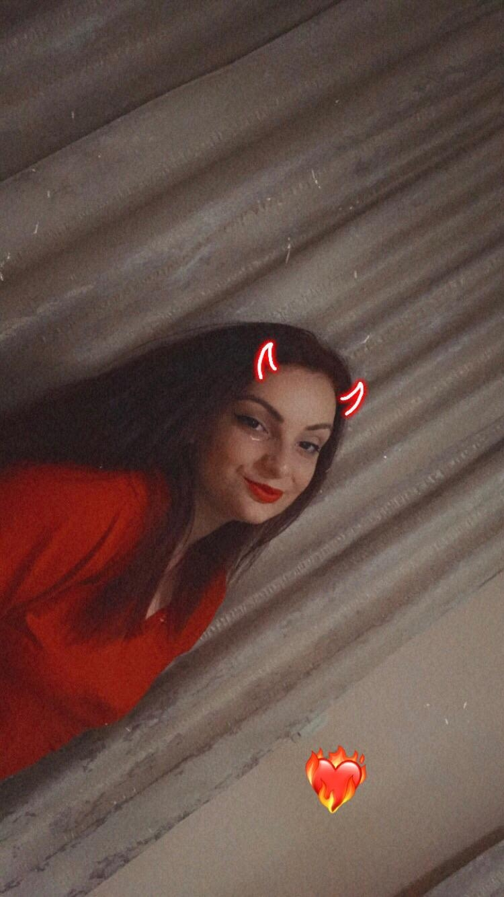

©Iconaru Madalin

MADALIN [SEFU]
LOREDANA [FRAIERA]
KARINA [DRAMA-QUEEN]
Aici puteti vedea mai multe informatii despre gasca:
Gasca este compusa din:
- Madalin [Sefu]
- Loredana [Fraiera]
- Karina [Drama Queen]
- Darky [Membru Special]
- La fel ca si Lori, nu face mai nimic.
- Roxana [Nu prea mai e... vie]
- Bye!